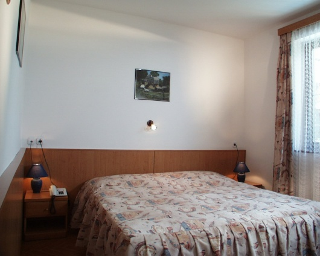

Hotel festői környezetben
Szállodánk a Bükki Nemzeti Park területén, Lillafüred közelében, Miskolc-Alsóhámorban található. A hotel két épületből és egy különálló recepcióból áll. Az épületeket a Szinva patak halk csobogása, a Bükk hegység friss levegője és az erdő öleli körbe. Vendégeink számára részben fedett, buszok fogadására is alkalmas parkoló áll rendelkezésre, valamint egy tágas pihenőkert, ahol a mozgás szerelmesei számos lehetőség közül választhatnak. A kertben játszótér is várja a gyerekeket.

Ideális hely a természet kedvelőinek
Szállodánk közvetlen környezetében számos látnivaló található, amely a természet szerelmesei számára ideális. A közelben található többek között:
- Lillafüredi Erdei Vasút
- Szeleta-barlang
- Szent István-cseppkőbarlang
- Hámori-tó
- Szinva-patak vízesése (lillafüredi vízesés)
- Lillafüredi pisztrángos
- Miskolci Állatkert
Ezek a nevezetességek akár gyalog is megközelíthetők. Továbbá rövid autóútra vagy tömegközlekedéssel könnyen elérhetők:
- Tapolcai Barlangfürdő
- Diósgyőri vár
- Bánkúti sícentrum
Étkezési lehetőségek
Napközben vendégeink számára több, jó hírű vendéglő áll rendelkezésre közvetlenül a szálloda mellett, illetve a közelben. Ezek az éttermek elfogadják a SZÉP kártyát is. Az alig 1 km-re fekvő Lillafüreden büfé jellegű étkezési lehetőségek is várják az érdeklődőket.
Szálláslehetőségek
Szállodánk 3 lakosztállyal és 22 kétágyas szobával rendelkezik, hogy minden vendégünk megtalálja a számára megfelelő elhelyezést.
Lakosztályok
A lakosztályok két szintesek, az előszobából csigalépcső vezet a nappaliba, amely erkéllyel, sarokülővel, beépített bútorokkal, asztallal, székkel, fotelággyal, állóventilátorral, TV-vel, telefonnal és minibárral van felszerelve. A hálószobában összetolt ágyak, beépített bútorok és íróasztal található. A fürdőszoba zuhanykabinnal és WC-vel felszerelt.

Kétágyas szobák
A kétágyas szobák előszobából, fürdőszobából és hálószobából állnak, és részben erkéllyel rendelkeznek. A szobákban összetolt ágyak, beépített bútorok, íróasztal, állóventilátor, TV, minibár és telefon található. A fürdőszoba zuhanykabinnal és WC-vel felszerelt. Többségükben WiFi is elérhető. Lehetőség van vendégágy vagy babaágy elhelyezésére, amelyet előre jelzett igény esetén biztosítunk.
Szállásfoglalási információk
A szobákat 14:00 órától lehet elfoglalni, és 10:00 óráig kell elhagyni. Felhívjuk figyelmüket, hogy egy szobafoglaláshoz – előzetes engedély hiányában – maximum 1 személygépkocsi vagy 2 motorkerékpár számára biztosítunk díjmentes parkolást. Autóbuszok és mikrobuszok parkolása csak előzetes megállapodás alapján lehetséges.